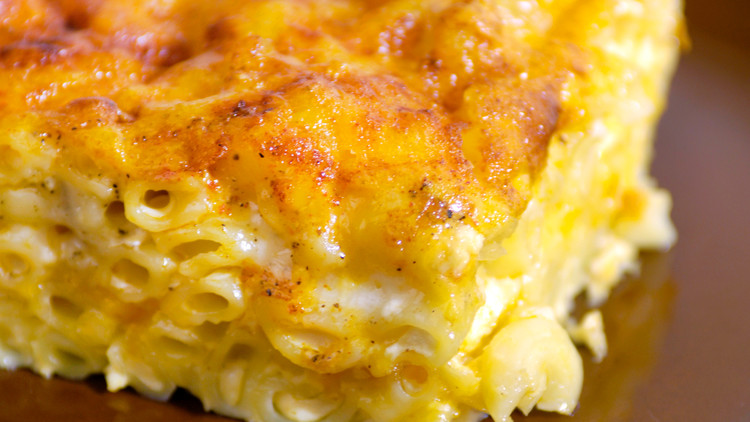

Mac & Cheese

Description
A Southern Mac & Cheese recipe from John Legend as told by Martha Stewart. Yields 8 servings.
Prep Time: 20 minutes
Bake Time: 35 minutes
Ingredients
- 4 tablespoons (1/2 stick) unsalted butter, plus more for baking dish
- Coarse salt and freshly ground pepper
- 3 cups elbow macaroni
- 2 (12 ounce) cans evaporated milk
- 1/3 cup skim milk
- 2 large eggs
- 1/2 teaspoon seasoned salt
- 1/4 teaspoon garlic powder
- 2 (8 ounce) packages extra-sharp cheddar cheese, grated
- 1 (8 ounce) package Monterey Jack cheese, grated
Directions
- Preheat oven to 375 degrees F. Generously butter a 13x9 glass baking dish; set aside. Bring a large pot of water to a boil; add salt and macaroni. Cook until al dente according to package directions. Drain and return to pot. Add butter and toss until pasta is coated and butter has melted; set aside.
- In a medium bowl, whisk together evaporated milk, skim milk, and eggs. Add seasoned salt, garlic powder, 1 teaspoon salt, and 1/2 teaspoon pepper; set aside. In another medium bowl, combine cheeses; set aside.
- Place 1/3 macaroni in an even layer in the bottom of prepared baking dish; cover evenly with 1/3 cheese. Repeat with remaining macaroni and cheese mixture. Pour milk mixture evenly over contents of baking dish. Bake until top layer is lightly browned, 35 to 45 minutes. Let stand 10 to 15 minutes before serving.